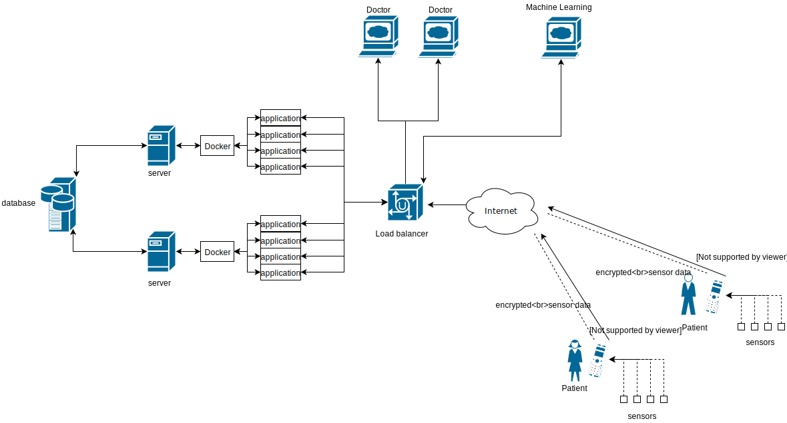

This web application is a proof of concept for the Gold Coast University Hospital, the intended use is for assisting the treatment of depression. The patients would wear sensors that are continuously monitoring their body parameters and sending this information to their mobile phone and then to the web application, the mobile phone application also allows psychometric monitoring. Statistics are generated from this data, visualized for a doctor to analyse or even directly accessibly for a machine learning algorithm to analyse.
The patients sections shows a table with the patient's id, first and last name, age, gender and sensors. The deletion and creation of users can also be done on this page. Once a patient has been clicked on it will take you to the patient profile page which has the ability to display graphs for blood pressure, heart rate, glucose levels, blood oxygen saturation, mood, energy, appetite and stress as long as the patient has that sensor. At the bottom of the page are statistics for the corresponding sensors which include the minimum and maximum values, average (mean), standard deviation and variance.
The research page has each weeks google docs document embedded week with a brief summary
The admin page is very powerful it allows the creation of randomly generated patients, parameterized random generation of sensor data and mass deletion of patients and sensor data. The page has two graphs the first being for the gender distribution and the second for the distribution of sensors. There is more information included as well; the number of patients, average age, number of sensors, number of sensor readings (records) and the name of the web application instance
A variety of technologies where used to develop this system. The web application is built in python3 using the Flask framework and the graphs are provided by the pygal module. The data is stored in a mysql database and the mysql-connector-python module is being used to communicate to it. As the initial design of the system is centered on scalability, everything server side is ran in docker containers this includes the web application, database and the Nginx load balancer. This allows multiple web application instances to be ran behind the Nginx proxy which distributes load during peak usage, and also high uptime as if an instance of the web application crashes there are multiple others that users will be routed to instead. The Android application is built in Android Studio and sends data in JSON format via a POST HTTP request.
Below is the system design which is centered around scalability and robustness.
